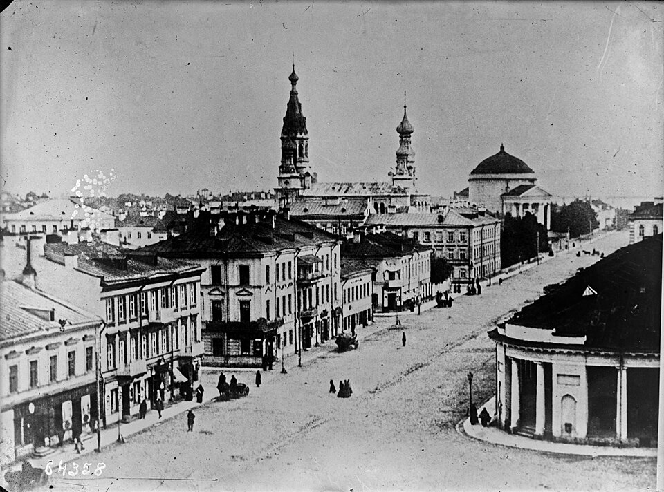
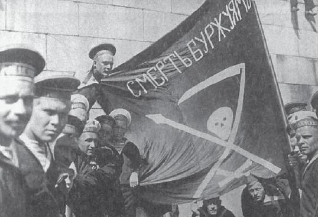
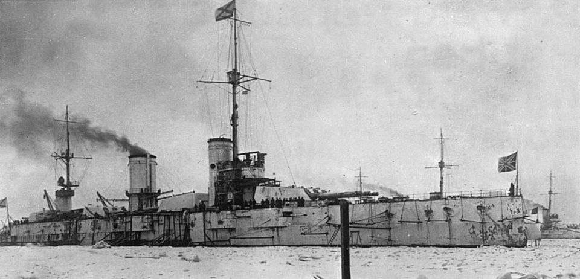
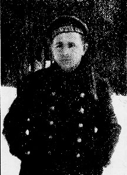
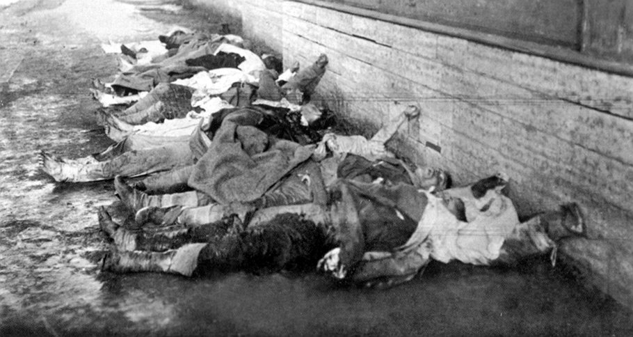
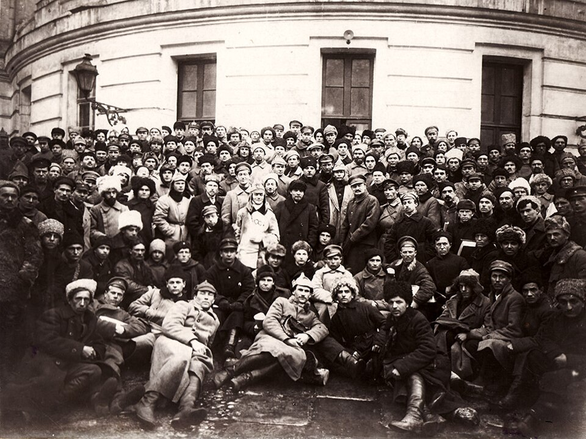
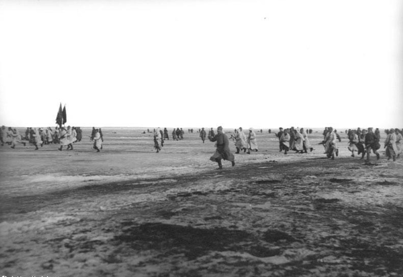

Generated by openrouter/xiaomi/mimo-v2-pro · April 2, 2026
In March 1921, sixteen years before Stalin's Great Purge would devour the Old Bolsheviks, the Soviet government faced what Vladimir Lenin would call "undoubtedly more dangerous than Denikin, Yudenich, and Kolchak combined." The threat came not from White armies or foreign interventionists, but from Kronstadt — the island naval fortress that had been, in Leon Trotsky's own words, the "adornment and pride of the revolution."
The Kronstadt sailors, who had fired the shot from the cruiser Aurora that signaled the storming of the Winter Palace in October 1917, had risen against the very government they helped create. For sixteen days, the fortress that guarded Petrograd's approaches became the site of the last major internal revolt against Bolshevik rule during the Russian Civil War. The rebellion's suppression would become one of the most controversial events in Soviet history — a Rorschach test for how one views the Russian Revolution itself.

Who Were the Kronstadt Sailors?

To understand Kronstadt, one must first understand the sailors themselves. The naval base on Kotlin Island, thirty-five miles west of Petrograd in the Gulf of Finland, had been Peter the Great's strategic masterpiece — a "Gibraltar of the Baltic" protecting his new capital. By 1917, the sailors stationed there had become legendary for their revolutionary fervor.
The Kronstadt sailors had been in the vanguard of both the 1905 and 1917 revolutions. In February 1917, they had declared a "Kronstadt Republic" and defied the Provisional Government. In October 1917, their support was crucial to the Bolshevik seizure of power. As historian Israel Getzler noted, Kronstadt's commune-like self-government represented "the radical, democratic and egalitarian aspirations of its garrison and working people." The island's Anchor Square could hold 30,000 people and served as a genuine public forum for direct democracy.
The Composition Myth
Bolshevik apologists later claimed that the original revolutionary sailors had been dispersed during the Civil War and replaced by "raw peasant levies from the Black Sea region." The evidence contradicts this: researcher Paul Avrich found that over 94% of the Petropavlovsk and Sevastopol crews were veterans who had served before 1917. Roughly 75% of the entire garrison were veterans of the October Revolution. These were not counter-revolutionary infiltrators — they were the revolution's original shock troops.
The Crisis of War Communism

By 1921, Russia was collapsing. The Civil War had ended in November 1920 with General Wrangel's defeat, but the Bolsheviks continued the policies of "War Communism" — grain requisitioning from peasants, militarization of labor, and one-party rule. The result was catastrophe: famine, disease, cold, and weariness gripped the nation.
In February 1921, the Cheka reported 155 peasant uprisings across Russia. Workers in Moscow and Petrograd were striking against reduced bread rations — cut by a third in January 1921 despite the end of hostilities. In Petrograd, martial law was declared on February 26. Factory closures, arrests, and Cheka terror failed to quell the discontent.
The Kronstadt sailors watched this unfold with growing alarm. Many had recently visited their home villages during temporary leave and returned horrified by what they saw: government requisitioning squads seizing the last grain from starving peasants, roadblock detachments preventing food from reaching cities, and the bureaucratic nightmare of "commissiocracy."
The Uprising: From Resolution to Rebellion
On February 26, 1921, in response to events in Petrograd, the crews of the battleships Petropavlovsk and Sevastopol held an emergency meeting. They sent a delegation to investigate conditions in Petrograd firsthand. When the delegates returned two days later, their report was devastating: the Bolsheviks were using armed force against striking workers.

On February 28, the sailors approved a resolution with fifteen demands — the famous Petropavlovsk Resolution. The next day, March 1, a mass meeting of 15,000 to 16,000 people gathered at Anchor Square. Mikhail Kalinin, chairman of the All-Russian Central Executive Committee, was shouted down when he denounced the sailors as traitors. The Petropavlovsk Resolution was adopted unanimously. Most of the Bolsheviks present voted for it.
The Petropavlovsk Resolution
On February 28, 1921, the crews of the battleships Petropavlovsk and Sevastopol adopted this resolution unanimously. It became the political manifesto of the rebellion.
"Having heard the representatives of the crews sent by general meeting to Petrograd to investigate the situation, we resolve:
In view of the fact that the present soviets do not express the will of the workers and peasants, immediately to hold new elections by secret ballot, with freedom of agitation for all workers and peasants..."
The demands were revolutionary — but not counter-revolutionary. They called for:
- New, free elections to the Soviets by secret ballot
- Freedom of speech and press for workers, peasants, anarchists, and left socialist parties
- Freedom of assembly for labor unions
- Liberation of all political prisoners
- Equalization of rations
- End to the Bolshevik monopoly on power
- Abolition of roadblock detachments and grain requisitioning
The slogan was "All Power to the Soviets, Not to Parties" — a return to the promises of 1917.

On March 2, tensions exploded. When three Bolshevik officials threatened reprisals, they were arrested. A Provisional Revolutionary Committee (PRC) was elected, chaired by Stepan Petrichenko, a Ukrainian-born chief clerk from the Petropavlovsk. By morning, the town, fleet, and fortifications were in rebel hands. Approximately 326 Bolsheviks were arrested — about a fifth of local party members — though they were treated humanely, receiving the same rations as other prisoners.
The rebellion was initially non-violent. The sailors believed the Bolsheviks would negotiate. They rejected advice from former Tsarist officers at the base — including General Kozlovsky — to attack Oranienbaum or break the ice to free their ships. They expected Russia to rally to their cause. They were tragically wrong.
Bolshevik Response: Lies and Ultimatums

The Bolshevik leadership's response was swift and uncompromising. On March 2, Lenin and Trotsky declared the mutiny a "White Guard" plot led by General Kozlovsky with French counterintelligence backing. These claims were fabrications. Victor Serge, a Bolshevik present in Petrograd, recalled: "The man who announced this frightful news was Ilya Ionov, Zinoviev's brother-in-law... But even before I went to the District Committee I met comrades... who claimed that it was an atrocious lie."
The sailors did not want the White Guards, and they did not want our power either.
— Vladimir LeninThe government took relatives of the sailors hostage. On March 5, Trotsky issued an ultimatum: surrender within 24 hours or be "shot like partridges." When American anarchists Emma Goldman and Alexander Berkman offered to mediate, they were ignored. When a rebel delegation came out to parley after the first assault, they were captured.
The propaganda campaign was relentless. Radio Moscow denounced the sailors as "White mutineers." The government claimed the revolt had been planned in Paris with foreign funding. These lies served their purpose: they isolated the rebels from potential supporters and justified the coming bloodshed.
Blood on the Ice

The military campaign began March 7 with artillery bombardment from Petrograd. The first assault across the frozen Gulf of Finland was a disaster for the attackers. Red Army soldiers — some sympathetic to the rebels — faced machine guns and fell by the hundreds. Government troops had to be driven forward at gunpoint by Cheka machine-gunners positioned behind them.
For ten days, the battle raged. The rebels, despite being outnumbered and outgunned, held their positions. But they were isolated, and their supplies were running low. The government poured in reinforcements, including hundreds of delegates from the 10th Party Congress in Moscow — the same congress that would ban internal party factions and announce the New Economic Policy.
The final assault came on March 16–17. Clad in white snow capes, 45,000 Red Army troops attacked from three directions at night. Vicious fighting ensued through the streets of Kronstadt. By March 18 — the fiftieth anniversary of the Paris Commune — the fortress had fallen.
The Cost in Lives
~1,000 rebels killed in the fighting
2,168 executed after capture (33% of those taken prisoner)
~2,000 sentenced to forced labor camps
8,000+ escaped across the ice to Finland
Teenage Komsomols were employed as executioners when the regular firing squad refused.
The aftermath was savage. An estimated 1,000 rebels died in the fighting. At least 500 were shot immediately without trial. Many who escaped across the ice to Finland were later lured back by promises of amnesty — only to be shot or imprisoned.
Timeline of the Rebellion
-
February 26, 1921Delegation from battleship Petropavlovsk sent to Petrograd to investigate strikes and unrest
-
February 28, 1921Emergency meeting on Petropavlovsk; 15 demands drafted — the Petropavlovsk Resolution
-
March 1, 1921Mass meeting at Anchor Square (15,000+ attendees); resolution adopted unanimously; Provisional Revolutionary Committee elected
-
March 2, 1921Bolshevik officials arrested; PRC takes control of fortress and fleet
-
March 5, 1921Trotsky issues ultimatum: surrender within 24 hours or be "shot like partridges"
-
March 7, 1921Red Army begins bombardment; first bloody assault across the ice fails
-
March 8–16, 1921Three additional assaults with heavy casualties on both sides
-
March 16, 1921Final assault begins with 45,000 troops, including Party Congress delegates
-
March 18, 1921Kronstadt falls. Bolsheviks celebrate — on the 50th anniversary of the Paris Commune
-
March 21, 1921New Economic Policy announced at 10th Party Congress — 3 days after suppression
The New Economic Policy: Reform Through Blood
The Kronstadt rebellion is inextricably linked to the New Economic Policy (NEP), announced at the 10th Party Congress on March 21, 1921 — just three days after the fortress fell. The NEP replaced grain requisitioning with a tax in kind, permitted limited private trade, and restored some market mechanisms.
In economic terms, the NEP went further than anything the Kronstadt rebels had demanded. Yet Lenin privately admitted that Kronstadt was the catalyst. The message was clear — economic concessions could be made, but political power would never be shared.
The NEP is often remembered as Lenin's pragmatic retreat, but it's equally important to remember what happened at Kronstadt — the rebellion that made that retreat possible, and the blood that bought it.
Legacy and Interpretations
Kronstadt remains one of the most contested events in revolutionary history. How one interprets it largely depends on one's political framework:
The Anarchist View
For anarchists like Emma Goldman and Alexander Berkman — who had initially supported the Bolsheviks — Kronstadt was the moment of betrayal. Berkman wrote: "The Communist government would make no concessions to the proletariat, while at the same time they were offering to compromise with the capitalists of Europe and America." Kronstadt proved that Bolshevism was inherently authoritarian, incapable of creating workers' democracy.
The Trotskyist View
Trotsky himself spent years defending the suppression, claiming the sailors had no conscious program, that they were "petty-bourgeois," that the garrison had fundamentally changed since 1917. Each claim has been refuted by historical evidence. Yet many modern Trotskyists still defend the actions as necessary for defending the revolution against a peasant-based counter-revolution.
The Liberal View
For liberal historians like Richard Pipes, Kronstadt reveals the totalitarian DNA in Bolshevism from the start — proof that Lenin's regime was always destined to become Stalin's dictatorship.
The Evidence-Based View
The historical record shows that the rebels were neither White agents nor petty-bourgeois peasants. They were workers and sailors who had made the revolution and watched it betrayed. Their demands were reasonable. Negotiation was possible but rejected. The Bolsheviks chose force over compromise, party power over workers' democracy.
The Silence of the Dead
Kronstadt was not the end of the Russian Revolution — that had died in the Civil War's crucible. But it was, perhaps, the moment when the revolution's corpse finally stopped twitching. The Bolshevik Party emerged more centralized, more authoritarian, more convinced that only it could speak for the working class. The ban on factions at the 10th Congress would eventually be used to expel Trotsky himself.
The sailors' slogan — "All Power to the Soviets, Not to Parties" — posed an existential threat not to socialism but to single-party rule. In suppressing Kronstadt, the Bolsheviks established a principle that would haunt the Soviet Union until its collapse: the Party is always right, and the workers must obey.
What a pity, that the silence of the dead sometimes speaks louder than the living voice.
— Emma GoldmanThe Kronstadt sailors died demanding what they had fought for in 1917 — democracy, equality, freedom. Their defeat ensured that the Soviet Union would develop not into a workers' paradise but into the bureaucratic autocracy they had risked everything to prevent.
The frozen waters of the Gulf of Finland closed over the bodies of the fallen. The battleship Petropavlovsk was renamed the Marat. Anchor Square became "Revolutionary Square." But the memory of what happened there in March 1921 could not be entirely erased. It remains a warning, a tragedy, and a question that no ideology can definitively answer: What happens when the revolutionaries become the oppressors?
Sources & Further Reading
Avrich, Paul. Kronstadt 1921 (Princeton University Press, 1970/1991) — the definitive scholarly account
Getzler, Israel. Kronstadt 1917–1921: The Fate of a Soviet Democracy (1983)
Berkman, Alexander. The Kronstadt Rebellion (1922) — libcom.org
Trotsky, Leon. "Hue and Cry Over Kronstadt" (1938) — marxists.org
Serge, Victor. Memoirs of a Revolutionary (1951)
Goldman, Emma. Living My Life (1931)
Figes, Orlando. A People's Tragedy (1997)
Image Generation
One AI-generated image used in this article:
- OpenRouter "Strategic map showing Kronstadt's location in the Gulf of Finland relative to Petrograd, early 1920s cartographic style"
All other photographs sourced from Wikimedia Commons (public domain).